using GeoStats4 Geometric processing
In this chapter we give an overview of some of the advanced geometric processing features of the framework, highlighting the ones that will be most useful in future chapters.
From now on, we will assume that the main module of the framework is loaded in all code examples:
We will also assume that the Makie.jl backend is loaded:
import CairoMakie as Mke4.1 Geometries
We provide a vast list of geometries, which are organized into two main classes, Primitive and Polytope geometries. A geometry is a Primitive if it can be represented efficiently without discretization. For example, we can represent a Box with two corner points or a Ball with center and radius:
box = Box((0, 0, 0), (1, 1, 1))
ball = Ball((0, 0, 2), 0.5)
viz([box, ball], color = ["teal", "slategray3"])┌ Warning: Found `resolution` in the theme when creating a `Scene`. The `resolution` keyword for `Scene`s and `Figure`s has been deprecated. Use `Figure(; size = ...` or `Scene(; size = ...)` instead, which better reflects that this is a unitless size and not a pixel resolution. The key could also come from `set_theme!` calls or related theming functions.
└ @ Makie ~/.julia/packages/Makie/ND0gA/src/scenes.jl:220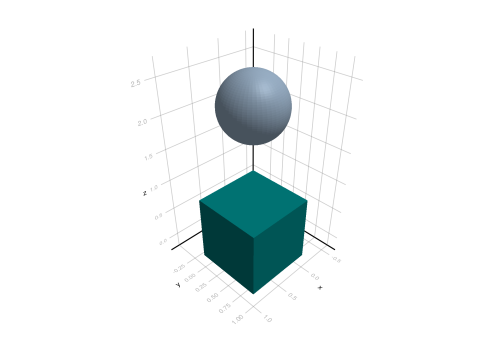
Other examples include the Cylinder:
cyl = Cylinder(1.0)
viz(cyl)┌ Warning: Found `resolution` in the theme when creating a `Scene`. The `resolution` keyword for `Scene`s and `Figure`s has been deprecated. Use `Figure(; size = ...` or `Scene(; size = ...)` instead, which better reflects that this is a unitless size and not a pixel resolution. The key could also come from `set_theme!` calls or related theming functions.
└ @ Makie ~/.julia/packages/Makie/ND0gA/src/scenes.jl:220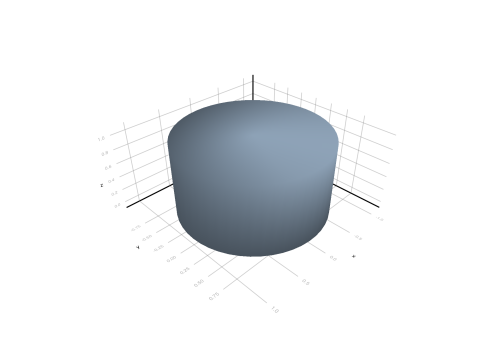
And the Torus:
torus = Torus((1, 1, 0), (-1, -1, 0), (1, -1, 0), 0.5)
viz(torus)┌ Warning: Found `resolution` in the theme when creating a `Scene`. The `resolution` keyword for `Scene`s and `Figure`s has been deprecated. Use `Figure(; size = ...` or `Scene(; size = ...)` instead, which better reflects that this is a unitless size and not a pixel resolution. The key could also come from `set_theme!` calls or related theming functions.
└ @ Makie ~/.julia/packages/Makie/ND0gA/src/scenes.jl:220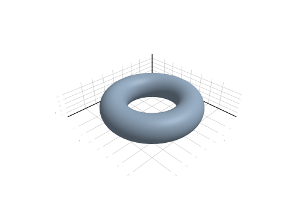
The full list can be obtained with Julia’s subtypes function:
subtypes(Primitive)19-element Vector{Any}:
Ball
BezierCurve
Box
Circle
Cone
ConeSurface
Cylinder
CylinderSurface
Disk
Ellipsoid
Frustum
FrustumSurface
Line
ParaboloidSurface
Plane
Point
Ray
Sphere
Torus
Note
Geometries have their own documentation. For example, to learn more about the Cylinder geometry, its parameters and defaults, we can type the following in the Julia REPL:
?CylinderA geometry is a Polytope if it can be represented as a combination of “flat sides”, which are also Polytope themselves. A 3D Polytope is called a Polyhedron, a 2D Polytope is called a Polygon and a 1D Polytope is called a polygonal Chain. All these geometries are represented internally with a list of vertices.
First, let’s take a look into the Polyhedron geometries:
subtypes(Polyhedron)3-element Vector{Any}:
Hexahedron
Pyramid
TetrahedronThe Hexahedron is a generalization of a 3D Box in the sense that it doesn’t need to be aligned with the coordinate system:
hex = Hexahedron((0, 0, 0), (1, 0, 0), (1, 1, 0), (0, 1, 0),
(0, 0, 1), (1, 0, 1), (1, 1, 1), (0, 1, 1))
viz(hex)┌ Warning: Found `resolution` in the theme when creating a `Scene`. The `resolution` keyword for `Scene`s and `Figure`s has been deprecated. Use `Figure(; size = ...` or `Scene(; size = ...)` instead, which better reflects that this is a unitless size and not a pixel resolution. The key could also come from `set_theme!` calls or related theming functions.
└ @ Makie ~/.julia/packages/Makie/ND0gA/src/scenes.jl:220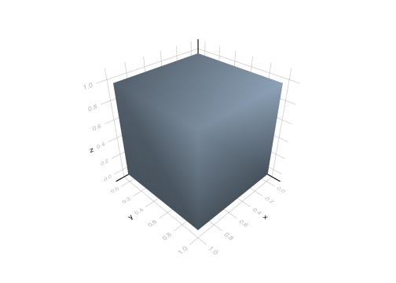
In this case, we need to store all the 8 vertices instead of just the corner points. Other examples of Polyhedron include the Tetrahedron and the Pyramid.
Now, let’s move to the Polygon geometries:
subtypes(Polygon)2-element Vector{Any}:
Ngon
PolyAreaWe provide two types of Polygon that meet different application requirements.
The Ngon is a polygon without holes. Its vertices are stored in static memory, and they are mostly used for discretization of other geometries and geospatial domains. We provide type aliases to construct Ngon with a specific number N of vertices:
Triangle, Quadrangle, Pentagon, …, Decagon
The Quadrangle is a generalization of the 2D Box in the sense that it doesn’t need to be aligned with the coordinate system:
t = Triangle((0, 0), (1, 0), (1, 1))
q = Quadrangle((1, 1), (2, 1), (2, 2), (1, 2))
viz([t, q], color = ["teal", "slategray3"])┌ Warning: Found `resolution` in the theme when creating a `Scene`. The `resolution` keyword for `Scene`s and `Figure`s has been deprecated. Use `Figure(; size = ...` or `Scene(; size = ...)` instead, which better reflects that this is a unitless size and not a pixel resolution. The key could also come from `set_theme!` calls or related theming functions.
└ @ Makie ~/.julia/packages/Makie/ND0gA/src/scenes.jl:220The PolyArea is a polygon with or without holes. Its vertices are stored in dynamic memory, and they are mostly used for representation of polygonal areas in GIS:
outer = [(0.0, 0.0), (1.0, 0.0), (1.0, 1.0), (0.0, 1.0)]
hole1 = [(0.2, 0.2), (0.4, 0.2), (0.4, 0.4), (0.2, 0.4)]
hole2 = [(0.6, 0.2), (0.8, 0.2), (0.8, 0.4), (0.6, 0.4)]
poly = PolyArea([outer, hole1, hole2])
viz(poly)┌ Warning: Found `resolution` in the theme when creating a `Scene`. The `resolution` keyword for `Scene`s and `Figure`s has been deprecated. Use `Figure(; size = ...` or `Scene(; size = ...)` instead, which better reflects that this is a unitless size and not a pixel resolution. The key could also come from `set_theme!` calls or related theming functions.
└ @ Makie ~/.julia/packages/Makie/ND0gA/src/scenes.jl:220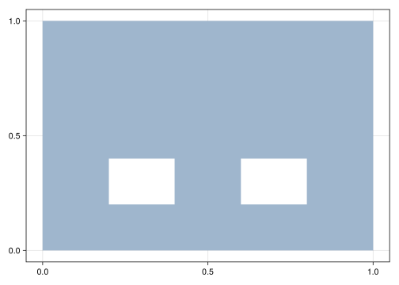
In the example above, the first list of vertices represents the external boundary of the PolyArea, also known as the outer Ring. The other two lists represent the two internal boundaries, or inner rings. A single list of vertices can be used, in which case the PolyArea doesn’t have holes.
Finally, let’s take a look into the polygonal Chain:
subtypes(Chain)3-element Vector{Any}:
Ring
Rope
SegmentThese are 1-dimensional polytopes connecting Points in sequence. We’ve seen the Rings in the PolyArea and Ngon geometries:
r = rings(poly)
viz(r)┌ Warning: Found `resolution` in the theme when creating a `Scene`. The `resolution` keyword for `Scene`s and `Figure`s has been deprecated. Use `Figure(; size = ...` or `Scene(; size = ...)` instead, which better reflects that this is a unitless size and not a pixel resolution. The key could also come from `set_theme!` calls or related theming functions.
└ @ Makie ~/.julia/packages/Makie/ND0gA/src/scenes.jl:220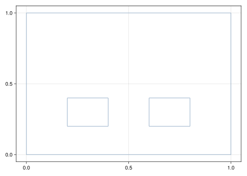
A Ring is closed meaning that its first and last Points are connected with a Segment. A Rope is an open Ring without the closing Segment:
viz(open.(r))┌ Warning: Found `resolution` in the theme when creating a `Scene`. The `resolution` keyword for `Scene`s and `Figure`s has been deprecated. Use `Figure(; size = ...` or `Scene(; size = ...)` instead, which better reflects that this is a unitless size and not a pixel resolution. The key could also come from `set_theme!` calls or related theming functions.
└ @ Makie ~/.julia/packages/Makie/ND0gA/src/scenes.jl:220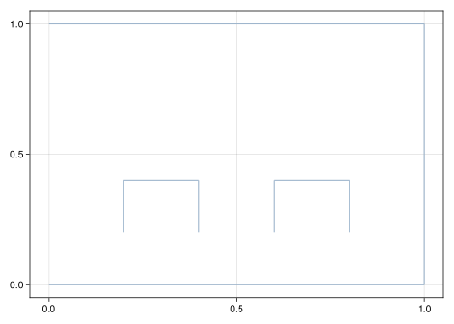
We can obtain the list of segments of a Chain with the segments function:
collect(segments(first(r)))4-element Vector{Segment{2, Float64}}:
Segment((0.0, 0.0), (1.0, 0.0))
Segment((1.0, 0.0), (1.0, 1.0))
Segment((1.0, 1.0), (0.0, 1.0))
Segment((0.0, 1.0), (0.0, 0.0))The Segment geometry is a Chain with just 2 vertices:
viz(Segment((0, 0), (1, 1)))┌ Warning: Found `resolution` in the theme when creating a `Scene`. The `resolution` keyword for `Scene`s and `Figure`s has been deprecated. Use `Figure(; size = ...` or `Scene(; size = ...)` instead, which better reflects that this is a unitless size and not a pixel resolution. The key could also come from `set_theme!` calls or related theming functions.
└ @ Makie ~/.julia/packages/Makie/ND0gA/src/scenes.jl:220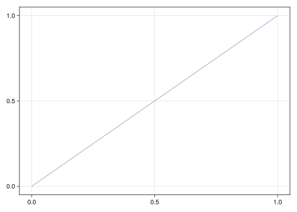
Finally, there is the Multi-geometry, which is a set of geometries seen as a single geometry. This is very common in GIS to represent disconnected areas on a geographic map that are related to each other (e.g., political areas):
Multi([Point(1, 2), Point(2, 3)])MultiPoint2{2,Float64}
├─ Point(1.0, 2.0)
└─ Point(2.0, 3.0)Multi(r)MultiRing{2,Float64}
├─ Ring((0.0, 0.0), ..., (0.0, 1.0))
├─ Ring((0.2, 0.2), ..., (0.4, 0.2))
└─ Ring((0.6, 0.2), ..., (0.8, 0.2))Multi([t, q])MultiNgon{2,Float64}
├─ Triangle((0.0, 0.0), (1.0, 0.0), (1.0, 1.0))
└─ Quadrangle((1.0, 1.0), ..., (1.0, 2.0))4.2 Predicates
Julia provides support for unicode characters in variable and function names. We leverage this feature to define commonly used geometric predicates with intuitive mathematical notation:
p = Point(0.0, 0.0)
b = Ball((0.5, 0.5), 1.0)
viz([p, b], color = ["teal", "slategray3"])┌ Warning: Found `resolution` in the theme when creating a `Scene`. The `resolution` keyword for `Scene`s and `Figure`s has been deprecated. Use `Figure(; size = ...` or `Scene(; size = ...)` instead, which better reflects that this is a unitless size and not a pixel resolution. The key could also come from `set_theme!` calls or related theming functions.
└ @ Makie ~/.julia/packages/Makie/ND0gA/src/scenes.jl:220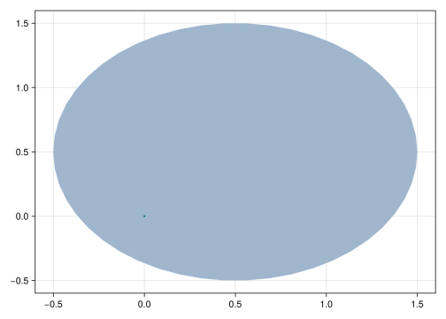
p ∈ btrueb1 = Box((0, 0), (1, 1))
b2 = Box((0.5, 0.5), (2, 2))
viz([b1, b2], color = ["teal", "slategray3"])┌ Warning: Found `resolution` in the theme when creating a `Scene`. The `resolution` keyword for `Scene`s and `Figure`s has been deprecated. Use `Figure(; size = ...` or `Scene(; size = ...)` instead, which better reflects that this is a unitless size and not a pixel resolution. The key could also come from `set_theme!` calls or related theming functions.
└ @ Makie ~/.julia/packages/Makie/ND0gA/src/scenes.jl:220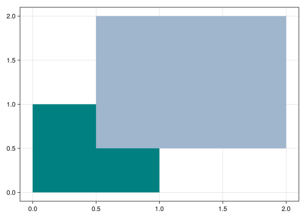
b1 ⊆ b2false
Tip for all users
The symbol ∈ is obtained in Julia by typing \in and pressing the TAB key on the keyboard. We could have used the syntax p in b or in(p, b) as well. Similarly, the symbol ⊆ is obtained by typing \subseteq. We could have used the syntax issubseteq(b1, b2) as well.
If you don’t know the \(\LaTeX\) name of a symbol, you can copy/paste it in the Julia REPL in help mode:
?∈Some predicates don’t have well-established mathematical notation. For example, a polygon issimple if it doesn’t have holes nor self-intersections:
q = Quadrangle((0, 0), (1, 0), (1, 1), (0.6, 0.4))
viz(q)┌ Warning: Found `resolution` in the theme when creating a `Scene`. The `resolution` keyword for `Scene`s and `Figure`s has been deprecated. Use `Figure(; size = ...` or `Scene(; size = ...)` instead, which better reflects that this is a unitless size and not a pixel resolution. The key could also come from `set_theme!` calls or related theming functions.
└ @ Makie ~/.julia/packages/Makie/ND0gA/src/scenes.jl:220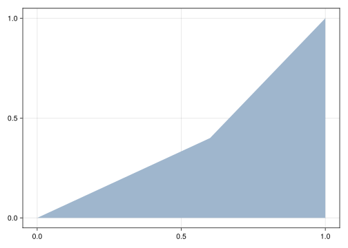
issimple(q)trueIt isconvex if all line segments connecting two points of the polygon are inside the polygon:
isconvex(q)falseA very useful predicate is intersects (with a “s” at the end):
outer = [(0.0, 0.0), (1.0, 0.0), (1.0, 1.0), (0.0, 1.0)]
hole1 = [(0.2, 0.2), (0.4, 0.2), (0.4, 0.4), (0.2, 0.4)]
hole2 = [(0.6, 0.2), (0.8, 0.2), (0.8, 0.4), (0.6, 0.4)]
poly = PolyArea([outer, hole1, hole2])
ball1 = Ball((0.5, 0.5), 0.05)
ball2 = Ball((0.3, 0.3), 0.05)
viz([poly, ball1, ball2], color = ["slategray3", "teal", "brown"])┌ Warning: Found `resolution` in the theme when creating a `Scene`. The `resolution` keyword for `Scene`s and `Figure`s has been deprecated. Use `Figure(; size = ...` or `Scene(; size = ...)` instead, which better reflects that this is a unitless size and not a pixel resolution. The key could also come from `set_theme!` calls or related theming functions.
└ @ Makie ~/.julia/packages/Makie/ND0gA/src/scenes.jl:220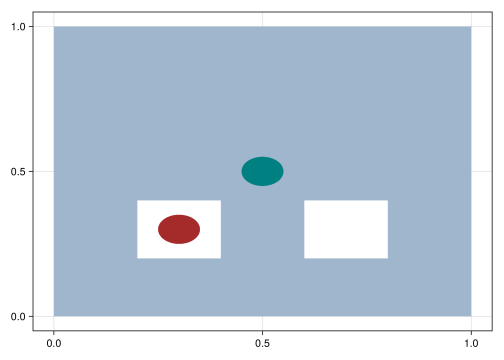
intersects(poly, ball1)trueintersects(poly, ball2)falseIt tells whether or not the geometries intersect, without actually computing the intersection. The intersection itself is considered a geometric operation as discussed in the next section.
Please consult the official documentation for the full list of predicates.
4.3 Operations
Geometric operations transform a geometry or a set of geometries into a new geometry or number. For example, the intersection of two segments can be a Point, a Segment or nothing:
s1 = Segment((0.0, 0.0), (1.0, 0.0))
s2 = Segment((0.5, 0.0), (2.0, 0.0))
s1 ∩ s2Segment{2,Float64}
├─ Point(0.5, 0.0)
└─ Point(1.0, 0.0)
Tip for advanced users
For performance-sensitive applications, it is wise to replace the ∩ operation by its the 3-argument version named intersection:
intersection(s1, s2) do I
if I == Crossing
return 1
else
return 0
end
end0The example above uses Julia’s do-syntax to define a function in place. The function takes the intersection type I and creates branches that return the same type (Int in this case) for type stability. The more we reduce the number of branches and types, the more the Julia compiler will be able to infer the output type.
Likewise, the intersection of two 2D geometries can be obtained with:
poly1 = Ngon((0, 1), (1, 0), (2, 1), (3, 0), (4, 1), (2, 2))
poly2 = Ngon((1.0, 0.5), (3.5, 0.0), (3.5, 1.5), (1.0, 1.5))
poly = poly1 ∩ poly2
viz(poly1)
viz!(poly2, color = "teal", alpha = 0.2)
viz!(boundary(poly), color = "red")
Mke.current_figure()┌ Warning: Found `resolution` in the theme when creating a `Scene`. The `resolution` keyword for `Scene`s and `Figure`s has been deprecated. Use `Figure(; size = ...` or `Scene(; size = ...)` instead, which better reflects that this is a unitless size and not a pixel resolution. The key could also come from `set_theme!` calls or related theming functions.
└ @ Makie ~/.julia/packages/Makie/ND0gA/src/scenes.jl:220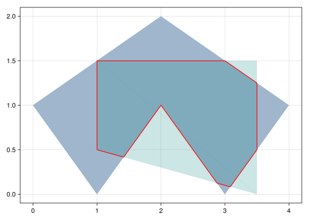
The previous example makes use of the boundary of a geometry, which is very useful to know:
boundary(poly)Ring{2,Float64}
├─ Point(1.0, 0.5)
├─ Point(1.4166666666666667, 0.4166666666666667)
├─ Point(2.0, 1.0)
├─ Point(2.875, 0.125)
├─ Point(3.0833333333333335, 0.08333333333333333)
├─ Point(3.5, 0.4999999999999999)
├─ Point(3.5, 1.25)
├─ Point(3.0, 1.5)
└─ Point(1.0, 1.5)Some operations like measure (length, area or volume) produce numbers instead of geometries. For example, the area of the polygon above is:
area(poly)2.447916666666667The measure of the boundary is known as the perimeter of the geometry:
perimeter(poly)7.598044863023599All Polytope geometries have vertices:
vertices(poly)9-element CircularVector(::Vector{Point2}):
Point(1.0, 0.5)
Point(1.4166666666666667, 0.4166666666666667)
Point(2.0, 1.0)
Point(2.875, 0.125)
Point(3.0833333333333335, 0.08333333333333333)
Point(3.5, 0.4999999999999999)
Point(3.5, 1.25)
Point(3.0, 1.5)
Point(1.0, 1.5)Please consult the official documentation for the full list of operations.
4.4 Algorithms
Any other function that is not a predicate nor an operation is called a geometric processing “algorithm” in the framework. We provide a list of advanced algorithms for discretization, simplification, refinement, convex hull, etc.
Below we illustrate some of these algorithms, which will be useful in future examples:
points = rand(Point2, 100)100-element Vector{Point2}:
Point(0.21129053024487732, 0.36995410483362856)
Point(0.1557783596451654, 0.8206407773989263)
Point(0.6764291842674601, 0.8404761080330203)
Point(0.1904528770558862, 0.5425642626187431)
Point(0.6522017571328865, 0.6912438628056923)
Point(0.975591681232245, 0.0635102179826621)
Point(0.5057165361604146, 0.8206076710471059)
Point(0.03984764284633269, 0.9849533236297332)
Point(0.7265632732697316, 0.4794908489827099)
Point(0.6135226707970565, 0.6924210333271706)
Point(0.2268534127452324, 0.41247434831691365)
Point(0.5263135993330831, 0.6425741305348579)
Point(0.9655637871719484, 0.26821720054027076)
⋮
Point(0.9653342447428499, 0.7584323248821707)
Point(0.21073121778091164, 0.9638384533177347)
Point(0.5258564819464295, 0.2336149308308897)
Point(0.4395245104760347, 0.16508262747260316)
Point(0.6589451574887499, 0.9292796002238491)
Point(0.7038054799862705, 0.0877002148510494)
Point(0.44838502010970016, 0.5357094432115082)
Point(0.6414930923803779, 0.07423833058387608)
Point(0.6094963624922565, 0.3739429362341148)
Point(0.7519435682760099, 0.3178378955572827)
Point(0.0965885309691824, 0.5628255136459719)
Point(0.23180592513104592, 0.0014572350155612757)viz(boundingbox(points))
viz!(points, color = "black")
Mke.current_figure()┌ Warning: Found `resolution` in the theme when creating a `Scene`. The `resolution` keyword for `Scene`s and `Figure`s has been deprecated. Use `Figure(; size = ...` or `Scene(; size = ...)` instead, which better reflects that this is a unitless size and not a pixel resolution. The key could also come from `set_theme!` calls or related theming functions.
└ @ Makie ~/.julia/packages/Makie/ND0gA/src/scenes.jl:220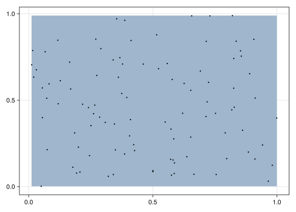
viz(convexhull(points))
viz!(points, color = "black")
Mke.current_figure()┌ Warning: Found `resolution` in the theme when creating a `Scene`. The `resolution` keyword for `Scene`s and `Figure`s has been deprecated. Use `Figure(; size = ...` or `Scene(; size = ...)` instead, which better reflects that this is a unitless size and not a pixel resolution. The key could also come from `set_theme!` calls or related theming functions.
└ @ Makie ~/.julia/packages/Makie/ND0gA/src/scenes.jl:220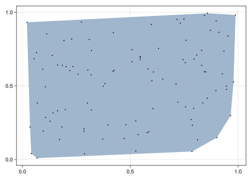
Geometries can be discretized into geospatial domains (i.e., collections of geometries). We have seen some of these domains in previous chapters, including the GeometrySet and the CartesianGrid. Here, we will focus on the Mesh subtypes:
subtypes(Mesh)5-element Vector{Any}:
CartesianGrid
RectilinearGrid
SimpleMesh
StructuredGrid
TransformedMeshsubtypes(Grid)5-element Vector{Any}:
CartesianGrid
RectilinearGrid
SimpleMesh{Dim, T, V, GridTopology{Dim}} where {Dim, T, V<:AbstractArray{Point{Dim, T}, 1}}
StructuredGrid
TransformedGrid{Dim, T, M, TR} where {Dim, T, M<:Grid{Dim, T}, TR<:Transform} (alias for TransformedMesh{Dim, T, GridTopology{Dim}, M} where {Dim, T, M<:Mesh{Dim, T, GridTopology{Dim}}})
There are two main functions to perform discretization: discretize and simplexify. The discretize function takes a geometry and a discretization algorithm as input, and produces a Mesh. For example, we can discretize a 2D ball with regular spacing along each parametric dimension (i.e., polar coordinates):
ball = Ball((0, 0), 1)
mesh = discretize(ball, RegularDiscretization(20, 50))1050 SimpleMesh{2,Float64}
1051 vertices
├─ Point(0.047619047619047616, 0.0)
├─ Point(0.09523809523809523, 0.0)
├─ Point(0.14285714285714285, 0.0)
├─ Point(0.19047619047619047, 0.0)
├─ Point(0.23809523809523808, 0.0)
⋮
├─ Point(0.8503840296981238, -0.10742848591226088)
├─ Point(0.8976275869035751, -0.11339673512960871)
├─ Point(0.9448711441090264, -0.11936498434695654)
├─ Point(0.9921147013144778, -0.12533323356430437)
└─ Point(0.0, 0.0)
1050 elements
├─ Quadrangle(1, 2, 23, 22)
├─ Quadrangle(2, 3, 24, 23)
├─ Quadrangle(3, 4, 25, 24)
├─ Quadrangle(4, 5, 26, 25)
├─ Quadrangle(5, 6, 27, 26)
⋮
├─ Triangle(1051, 946, 967)
├─ Triangle(1051, 967, 988)
├─ Triangle(1051, 988, 1009)
├─ Triangle(1051, 1009, 1030)
└─ Triangle(1051, 1030, 1)We can visualize the elements of the mesh with the showsegments option:
viz(mesh, showsegments = true)┌ Warning: Found `resolution` in the theme when creating a `Scene`. The `resolution` keyword for `Scene`s and `Figure`s has been deprecated. Use `Figure(; size = ...` or `Scene(; size = ...)` instead, which better reflects that this is a unitless size and not a pixel resolution. The key could also come from `set_theme!` calls or related theming functions.
└ @ Makie ~/.julia/packages/Makie/ND0gA/src/scenes.jl:220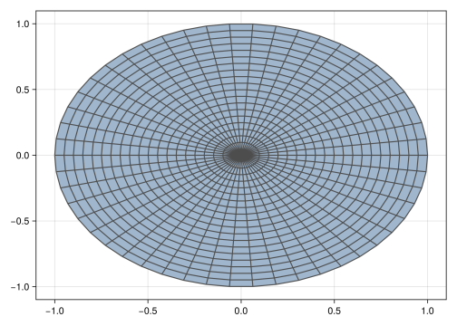
The meshes produced by the discretize function can have mixed element types. In this case, the mesh is made of Quadrangle and Triangle geometries. The function simplexify is preferred if the application requires a mesh of simplices (i.e., triangles or tetrahedra):
tmesh = simplexify(ball)5050 SimpleMesh{2,Float64}
2551 vertices
├─ Point(0.0196078431372549, 0.0)
├─ Point(0.0392156862745098, 0.0)
├─ Point(0.058823529411764705, 0.0)
├─ Point(0.0784313725490196, 0.0)
├─ Point(0.09803921568627451, 0.0)
⋮
├─ Point(0.9337550130018614, -0.11796069041346294)
├─ Point(0.9532082424394003, -0.12041820479707675)
├─ Point(0.972661471876939, -0.12287571918069055)
├─ Point(0.9921147013144778, -0.12533323356430437)
└─ Point(0.0, 0.0)
5050 elements
├─ Triangle(53, 52, 1)
├─ Triangle(1, 2, 53)
├─ Triangle(54, 53, 2)
├─ Triangle(2, 3, 54)
├─ Triangle(55, 54, 3)
⋮
├─ Triangle(2551, 2296, 2347)
├─ Triangle(2551, 2347, 2398)
├─ Triangle(2551, 2398, 2449)
├─ Triangle(2551, 2449, 2500)
└─ Triangle(2551, 2500, 1)viz(tmesh, showsegments = true)┌ Warning: Found `resolution` in the theme when creating a `Scene`. The `resolution` keyword for `Scene`s and `Figure`s has been deprecated. Use `Figure(; size = ...` or `Scene(; size = ...)` instead, which better reflects that this is a unitless size and not a pixel resolution. The key could also come from `set_theme!` calls or related theming functions.
└ @ Makie ~/.julia/packages/Makie/ND0gA/src/scenes.jl:220Various triangulation algorithms are provided such as Dehn1899 (Devadoss and O’Rourke 2011), and FIST (Held 2001). After the mesh is created, it is possible to refine the elements:
mesh = discretize(Box((0, 0), (1, 1)))2 SimpleMesh{2,Float64}
4 vertices
├─ Point(0.0, 0.0)
├─ Point(1.0, 0.0)
├─ Point(1.0, 1.0)
└─ Point(0.0, 1.0)
2 elements
├─ Triangle(1, 2, 3)
└─ Triangle(1, 3, 4)tmesh = refine(mesh, TriRefinement())
viz(tmesh, showsegments = true)┌ Warning: Found `resolution` in the theme when creating a `Scene`. The `resolution` keyword for `Scene`s and `Figure`s has been deprecated. Use `Figure(; size = ...` or `Scene(; size = ...)` instead, which better reflects that this is a unitless size and not a pixel resolution. The key could also come from `set_theme!` calls or related theming functions.
└ @ Makie ~/.julia/packages/Makie/ND0gA/src/scenes.jl:220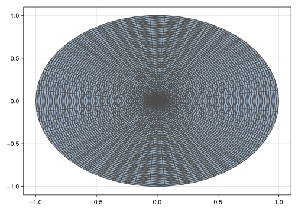
qmesh = refine(mesh, QuadRefinement())
viz(qmesh, showsegments = true)┌ Warning: Found `resolution` in the theme when creating a `Scene`. The `resolution` keyword for `Scene`s and `Figure`s has been deprecated. Use `Figure(; size = ...` or `Scene(; size = ...)` instead, which better reflects that this is a unitless size and not a pixel resolution. The key could also come from `set_theme!` calls or related theming functions.
└ @ Makie ~/.julia/packages/Makie/ND0gA/src/scenes.jl:220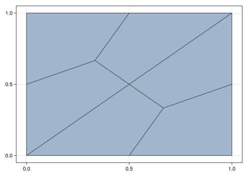
We will have the chance to see more algorithms in action as we advance in the chapters of the book.
4.5 Domains
For most purposes, domains can be manipulated as if they were Julia vectors of geometries. As an example, we can compute the centroid of each geometry in the domain by broadcasting the function:
grid = CartesianGrid(2, 3)
centroid.(grid)6-element Vector{Point2}:
Point(0.5, 0.5)
Point(1.5, 0.5)
Point(0.5, 1.5)
Point(1.5, 1.5)
Point(0.5, 2.5)
Point(1.5, 2.5)In some cases, however, it is important to know which geometries are adjacent to a given geometry; or which geometries make up the boundary of a given geometry. This is where the topology is useful:
topo = topology(grid)2×3 GridTopology(aperiodic, aperiodic)We can create an Adjacency topological relation to find which quadrangles are adjacent to quadrangle 1 in the domain:
A = Adjacency{2}(topo)
A(1)2-element Vector{Int64}:
2
3The number 2 that appears in the Adjacency relation is known as the parametric dimension. In this case, we are interested in the adjacency of 2D geometries. The quadrangle 1 is the first quadrangle in the bottom-left corner of the grid, and it is adjacent to quadrangles 2 and 3. As another example, the quadrangle 3 is adjacent to quadrangles 4, 1 and 5:
A(3)3-element Vector{Int64}:
4
1
5In order to query the adjacency of vertices, we create a relation with parametric dimension 0:
A = Adjacency{0}(topo)
A(1)2-element Vector{Int64}:
2
4We can also query the vertices that are on the boundary of a given quadrangle with the Boundary topological relation. In this case, we specify the parametric dimension of the input and output geometries:
B = Boundary{2,0}(topo)
B(1)4-element Vector{Int64}:
1
2
5
4Topological relations are an advanced feature of the framework. They are mostly used by developers of geostatistical algorithms, or in geospatial queries that will be covered in Part III of the book.
4.6 Congratulations!
Congratulations on finishing Part I of the book. Let’s quickly review what we learned so far:
- The main concept in geospatial data science is the concept of geospatial data, represented in the GeoStats.jl framework as geotables over geospatial domains.
- The geotable representation generalizes traditional GIS representations (“raster” vs. “vector”), and enables an unified approach to visualization and manipulation of geospatial data.
- It is still possible to interface with existing GIS technology via input and output of files using the GeoIO.jl module. A typical workflow will load GIS data at the beginning of a script, and save the result of the analysis at the end of the script.
- Geometric processing doesn’t need to be complicated. It should be fun and read like math. If it feels “computer sciency”, that is a limitation of the software and programming language.
We are finally ready to learn the advanced features of the framework. Let’s get it started.